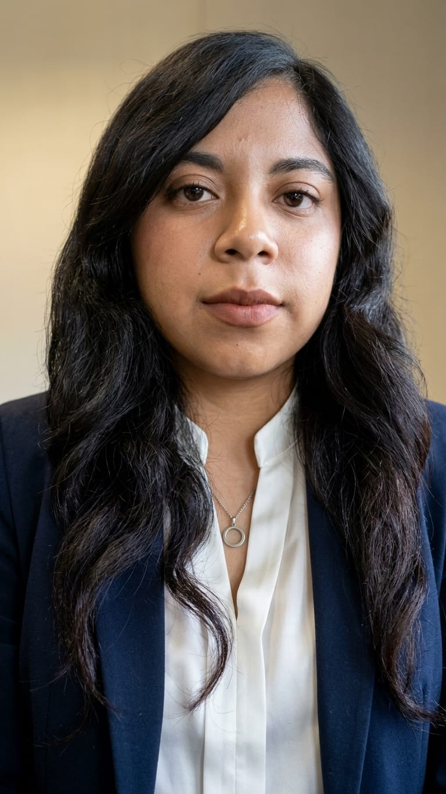

Viviana Polo Garduño
Ingeniera Informática
Tecnológico de Estudios Superiores de San Felipe del Progreso
Proyectos académicos
Tecnobike
Proyecto de emprendimiento enfocado en una bicicleta eléctrica plegable para facilitar la movilidad urbana y aprovechar mejor los espacios reducidos. Incluye una propuesta de comercialización y desarrollo de producto.
Lotería Mazahua Digital con Tarjetas RFID
Proyecto tecnológico y educativo dirigido a una escuela primaria, enfocado en promover el aprendizaje y la preservación de la cultura mazahua mediante una lotería digital.
Programación en Java
Desarrollo de ejercicios y aplicaciones académicas con clases, métodos, estructuras condicionales, menús y administración de información de películas.
Desarrollo web
Diseño y creación de páginas web utilizando HTML, CSS, herramientas de estilo y componentes para organizar contenidos y mejorar la presentación visual.
Bases de datos
Prácticas de diseño y administración de bases de datos relacionales, creación de tablas y consultas SQL para organizar información.
API para una carpintería
Desarrollo académico de una API con FastAPI y MariaDB orientada a gestionar productos, precios, materiales y existencias.
Intereses profesionales
- Desarrollo de software y aplicaciones web.
- Administración y diseño de bases de datos.
- Innovación y creación de proyectos tecnológicos.
- Desarrollo de soluciones para necesidades reales.
Experiencia
Experiencia adquirida mediante proyectos y prácticas académicas relacionadas con la programación, el desarrollo web, las bases de datos y el diseño de soluciones tecnológicas.